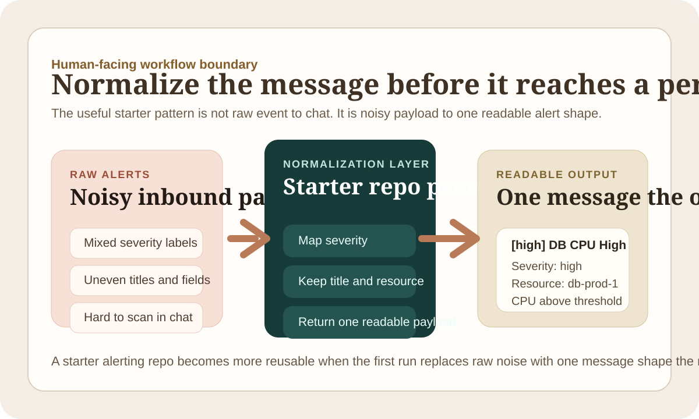

Alerting Starter Patterns Should Normalize Before They Notify
A starter alerting repo gets more reusable when it turns raw alert payloads into one readable message shape before the workflow hands the problem to a person.
Some starter alerting repos stop too early. They show that an event can be forwarded into chat. That is technically true and still not very useful.
If the payload stays noisy, the next system boundary is just a human reader doing cleanup by eye.
Normalize the message before it reaches a person
oci-fn-slack-alert-normalizer is the kind of starter pattern I want more of. The repo does not try to build a whole incident platform. It does one smaller and more believable job:
- map severity into one consistent scale
- keep the title readable
- preserve the resource context
- return one Slack-ready message shape
That is enough to make the pattern reusable.

Human-facing boundaries are still boundaries
I think this is where a lot of starter repos get weaker than they need to. They treat the step before a person reads the message as if it were just presentation. It is not.
That is still a boundary with a contract. If the alert that reaches chat is inconsistent, the operator is doing normalization work that the starter repo could have made visible much earlier.
A useful starter repo should leave one readable artifact
For alerting, the useful artifact is not only that the function ran. It is that the output is already shaped for the next real consumer. That might be:
- a normalized severity
- one stable title format
- a compact resource reference
- a message block another alerting step can reuse
That is what makes the first run feel like proof instead of only plumbing.
The bar I keep using
If a starter alerting repo helps me answer "what would the on-call person actually read" after one local run, it is already doing the right job. That is usually enough boundary clarity for the rest of the workflow to attach cleanly later.